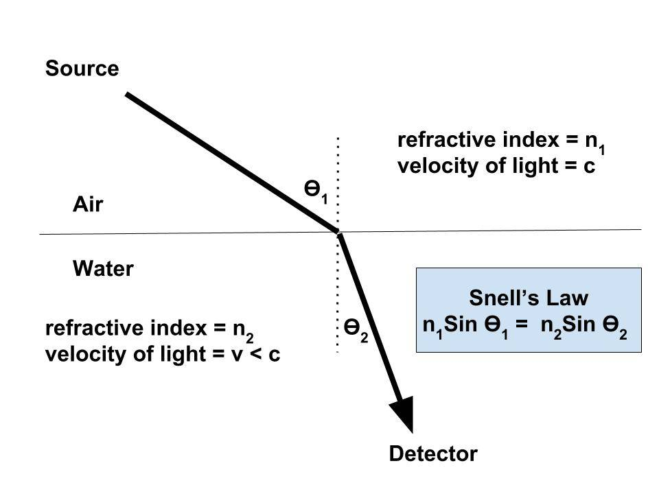
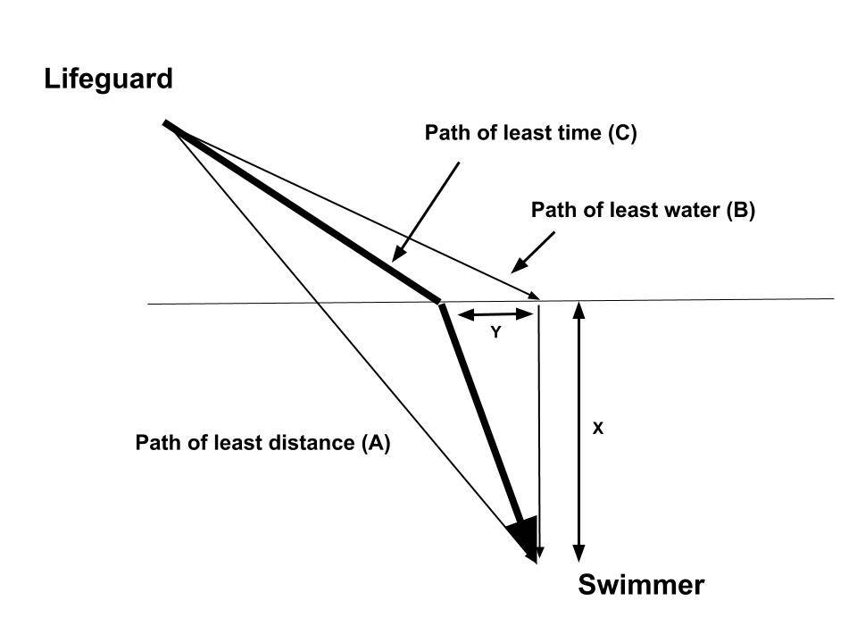
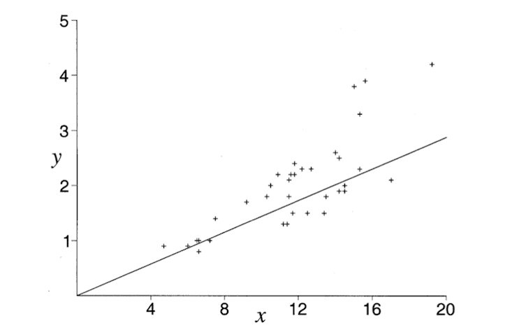
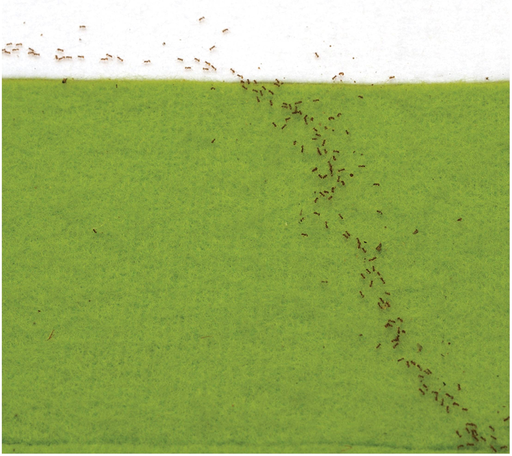

April 1, 2018; last revised March 24, 2025
Why Does Light Bend When Entering Water?
1. In 1657, the French lawyer and mathematician Pierre De Fermat (behind Fermat’s Last Theorem) worked out that when light travels from one place to another, it always takes the path of least time. The path of a ray of light going from air to water is shown below.

- There’s a formula called Snell’s law (shown in the figure) that correctly predicts the exact angle by which the light bends, depending on the materials it’s traveling through and the angle at which it hits the surface.
- Fermat explained this observation of light taking the "time of least time" to reach a detector in the water and changing its path (called "refraction") by taking into account that light travels slower in water than in air.
- But the question of WHY it does that has not been answered. Furthermore, how would a photon know an interface is coming up ahead? As we saw in the post, "Feynman’s Method of “A Particle Exploring All Possible Paths," the wave theory of light cannot explain it.
- As we also saw in that post, Feynman devised a technique called "a photon exploring all possible paths" but admitted that he did not know WHY it worked. In future posts, we will show that it is due to the nonlocality of Nature and the instantaneous establishment of quantum fields for "all possible paths" for the photon.
A Swimmer Does the Same as Light!
2. That is precisely the same procedure followed by a lifeguard (instinctively) in reaching a drowning swimmer in the water. The figure below illustrates the situation.

How to Find the Path of Least Time?
3. When we look at the above figure, at first glance, one may wonder whether a straight line (path A) is the fastest path. That is indeed the shortest, but it isn’t the quickest because one can run faster along the beach and cover more distance on land than on the water.
- However, if one runs on path B, making the distance in water minimum is also not the quickest. That route is too long, and it slows you down.
- The quickest path is C, which lies between A and B, where the lifeguard jumps in at a distance of x before the shortest path in the water.
- Of course, a lifeguard would not even think about all this. Instead, he/she would instinctively choose a path that turns out to be close to this optimum path C.
An Experiment on a Dog
4. I have not encountered anyone experimenting on lifeguards and seeing how close they get to the "optimum path." But I came across a paper by a math professor who studied his dog fetching a ball thrown into Lake Michigan.
5. After collecting 35 data points (the x and y values in the figure above, in meters), Professor Pennings plotted them. Along with these data points, he also drew the optimal trajectory predicted by Snell's law, shown by the straight line below (figure from the above paper).

- Therefore, just like a photon "would know" how to take the "path of least time," a dog would too!
Ants Take the Path of Least Time Too!
6. Even more interestingly, even ants seem to find the "optimum path" that takes the least time to get to their food.
- A group of researchers used a glass surface and a rough green felt surface—analogous to air and water or sand and water in the above cases—to separate a colony of ants. They placed ant food some distance into the rough green felt surface.
- They found that the ant trails were far closer to the quickest path than to the direct route. Like light and lifeguards, these ants seemed to minimize time and not distance. The following figure showing the ants' trail is from their paper: "Fermat's Principle of Least Time Predicts Refraction of Ant Trails at Substrate Borders."

Conclusion
The critical philosophical problem for Newton, Fermat, and Feynman with their “particle representation of light” was to explain "how a photon would know" in advance how to determine the path of least time; see the book by Ivar Ekeland in the References.
- But that problem goes away when we realize that a photon (or any particle) takes into account "all possible paths" instantaneously due to Nature's nonlocality. That is the basis of our new interpretation of quantum mechanics. We will discuss this in detail in upcoming posts.
- Interestingly, the observations that humans, dogs, and ants all take the "path of least time" instinctively illustrate that this is how Nature works. Even living beings are guided by this "nonlocality of Nature." This example demonstrates that there is so much that we DO NOT KNOW about how Nature works.
- That is closely related to how Nature AUTOMATICALLY executes kamma vipāka. That will become more clear as we proceed. Also see "Quantum Entanglement – We Are All Connected."
We can discuss any questions on these QM posts at the discussion forum: "Quantum Mechanics – A New Interpretation."
References
I. Ekeland, "The Best of All Possible Worlds: Mathematics and Destiny" (University of Chicago Press, 2006).
R. P. Feynman, “QED: The Strange Theory of Light and Matter” (Princeton University Press, 1985).
J. Oettler et al., "Fermat's Principle of Least Time Predicts Refraction of Ant Trails at Substrate Borders," PLOS ONE, vol. 8, issue 3, e59739 (2013).
T. J. Pennings, "Do Dogs Know Calculus?", The College Mathematics Journal, vol. 34, No. 3, pp. 178-182 (2003); link to pdf in #4 above.
1º de abril de 2018; última revisão em 24 de março de 2025
Por que a luz se curva ao entrar na água?
1. Em 1657, o advogado e matemático francês Pierre De Fermat (autor do Último Teorema de Fermat) descobriu que, quando a luz se desloca de um lugar para outro, ela sempre segue o caminho que leva menos tempo. O trajeto de um raio de luz que passa do ar para a água é mostrado abaixo.
- Existe uma fórmula chamada Lei de Snell (mostrada na figura) que prevê corretamente o ângulo exato em que a luz se desvia, dependendo dos materiais pelos quais ela atravessa e do ângulo em que incide na superfície.
- Fermat explicou essa observação de que a luz leva o “menor tempo” para atingir um detector na água e altera seu trajeto (chamado de “refração”) levando em conta que a luz viaja mais devagar na água do que no ar.
- Mas a questão de POR QUE ela faz isso ainda não foi respondida. Além disso, como um fóton saberia que uma interface está se aproximando? Como vimos no ensaio “O método de Feynman de ‘uma partícula explorando todos os caminhos possíveis’”, a teoria ondulatória da luz não consegue explicar isso.
- Como também vimos nesse ensaio, Feynman criou uma técnica chamada “um fóton explorando todos os caminhos possíveis”, mas admitiu que não sabia POR QUE ela funcionava. Em ensaios futuros, mostraremos que isso se deve à não localidade da Natureza e ao estabelecimento instantâneo de campos quânticos para “todos os caminhos possíveis” do fóton.
Um nadador faz o mesmo que a luz!
2. Esse é exatamente o mesmo procedimento seguido por um salva-vidas (instintivamente) ao alcançar um nadador que está se afogando na água. A figura abaixo ilustra a situação.
Como Encontrar o Caminho de Menor Tempo?
3. Ao observarmos a figura acima, à primeira vista, pode-se questionar se uma linha reta (trajetória A) é o caminho mais rápido. Essa é, de fato, a mais curta, mas não é a mais rápida, pois é possível correr mais rápido pela praia e percorrer uma distância maior em terra do que na água.
- No entanto, se alguém correr pelo caminho B, minimizando a distância na água, também não será o mais rápido. Esse trajeto é muito longo e faz com que você perca velocidade.
- O caminho mais rápido é o C, que fica entre A e B, onde o salva-vidas entra na água a uma distância de x antes do caminho mais curto na água.
- É claro que um salva-vidas nem sequer pensaria em tudo isso. Em vez disso, ele ou ela escolheria instintivamente um caminho que acabasse sendo próximo desse caminho ideal C.
Um experimento com um cachorro
4. Não encontrei ninguém fazendo experimentos com salva-vidas para verificar o quão perto eles chegam do “caminho ideal”. Mas me deparei com um artigo de um professor de matemática que estudou seu cão pegando uma bola lançada no Lago Michigan.
5. Depois de coletar 35 pontos de dados (os valores de x e y na figura acima, em metros), o professor Pennings os representou graficamente. Junto com esses pontos de dados, ele também traçou a trajetória ótima prevista pela lei de Snell, mostrada pela linha reta abaixo (figura do artigo mencionado acima).
- Portanto, assim como um fóton “saberia” como seguir o “caminho de menor tempo”, um cão também saberia!
As formigas também seguem o caminho de menor tempo!
6. O que é ainda mais interessante é que até mesmo as formigas parecem encontrar o “caminho ideal” que leva menos tempo para chegar à comida.
- Um grupo de pesquisadores usou uma superfície de vidro e uma superfície de feltro verde áspero — análogas ao ar e à água ou à areia e à água nos casos acima — para separar uma colônia de formigas. Eles colocaram comida para formigas a alguma distância na superfície de feltro verde áspero.
- Eles descobriram que os rastros das formigas estavam muito mais próximos do caminho mais rápido do que da rota direta. Assim como a luz e os salva-vidas, essas formigas pareciam minimizar o tempo e não a distância. A figura a seguir, que mostra a trilha das formigas, é do artigo deles: “O Princípio do Menor Tempo de Fermat Prevê a Refração das Trilhas das Formigas nas Bordas do Substrato”.
Conclusão
O problema filosófico crítico para Newton, Fermat e Feynman, com sua “representação da luz como partícula”, era explicar “como um fóton saberia” antecipadamente como determinar o caminho de menor tempo; consulte o livro de Ivar Ekeland nas Referências.
- Mas esse problema desaparece quando percebemos que um fóton (ou qualquer partícula) leva em conta “todos os caminhos possíveis” instantaneamente, devido à não localidade da Natureza. Essa é a base de nossa nova interpretação da mecânica quântica. Discutiremos isso em detalhes em futuros ensaios.
- Curiosamente, as observações de que humanos, cães e formigas seguem instintivamente o “caminho de menor tempo” ilustram que é assim que a Natureza funciona. Até mesmo os seres vivos são guiados por essa “não-localidade da Natureza”. Esse exemplo demonstra que há muito que NÃO SABEMOS sobre como a Natureza funciona.
- Isso está intimamente relacionado à forma como a Natureza executa AUTOMATICAMENTE o Kamma Vipāka. Isso ficará mais claro à medida que avançarmos. Veja também “Entrelaçamento Quântico – Estamos Todos Conectados”.
Podemos discutir quaisquer dúvidas sobre esses ensaios de Mecânica Quântica no fórum de discussão: “Mecânica Quântica – Uma Nova Interpretação”.
Referências
I. Ekeland, “The Best of All Possible Worlds: Mathematics and Destiny” (University of Chicago Press, 2006).
R. P. Feynman, “QED: A Estranha Teoria da Luz e da Matéria” (Princeton University Press, 1985).
J. Oettler et al., “O Princípio do Menor Tempo de Fermat Prevê a Refração de Trilhas de Formigas nas Fronteiras do Substrato”, PLOS ONE, vol. 8, edição 3, e59739 (2013).
T. J. Pennings, “Os cães sabem cálculo?”, The College Mathematics Journal, vol. 34, n.º 3, pp. 178-182 (2003); link para o PDF no item 4 acima.
{kind=link}